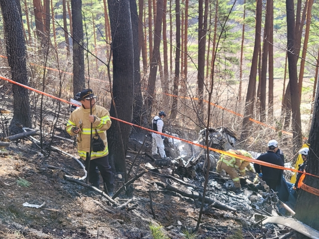

양양 추락 헬기에 초등학교 女 동창이 왜 탑승했나
강원도 양양에서 추락한 헬기 탑승자 5명 중 1명이 정비사의 초등학교 동창인 것으로 확인됐다.
28일 경찰에 따르면 헬기 탑승자 가운데 숨진 여성 중 1명은 함께 탑승한 정비사 A씨(54)의 초등학교 동창생 B씨(53)로 파악됐다. 또 다른 여성은 B씨의 지인 C씨(53)로 추정하고 있다.
경찰은 이들의 신원을 밝히기 위해 국립과학수사연구원에 DNA(유전자 정보) 긴급 감정을 의뢰했다. 긴급 감정은 2~3일이면 DNA 분석이 가능해 이른 시일 내에 각각의 신원이 밝혀질 것으로 보인다. 이와 함께 숨진 5명의 부검도 이뤄질 예정이다.
앞서 27일 오전 10시50분쯤 강원도 양양군 현북면 어성전리 인근 야산으로 추락했다. 이 사고로 헬기에 타고 있던 5명이 숨졌다. 헬기 탑승자는 당초 2명으로 알려졌으나 현장에선 시신 5구가 수습됐다. 비행계획을 당국에 신고할 때 3명의 탑승정보가 누락됐던 것으로 파악됐다.
강원도 양양
추락한 헬기 탑승자 명중
1명이 정비사의 초등학교 동창
인 것으로 확인됐다.